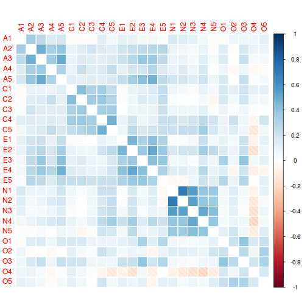
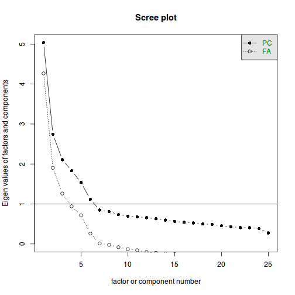
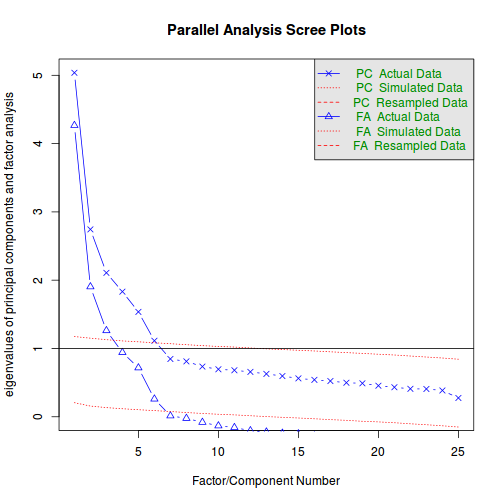
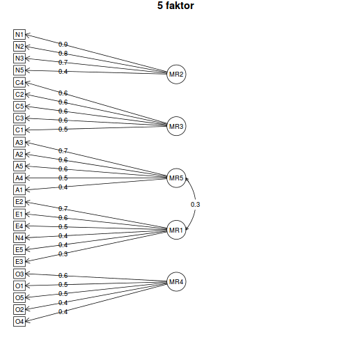
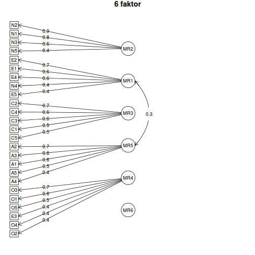

A példában a psych csomag 'bfi' példaadatát fogjuk használni, amely egy személyiségkérdőív 25 itemére kapott válaszait (N=2800) tartalmazza, illetve néhány demográfiai változót. A kapcsolódó 'bfi.dictionary' adatframe 'Keying' változója tartalmazza, hogy a 25 item közül melyek voltak fordított itemek. A 25 item elvileg 5 faktort mér (A: Agreeableness, C: Conscientiousness, E: Extraversion, N: Neuroticism, and O: Opennness).
# csomag betöltése
library(psych)
# a bfi és bfi.dictionary leírása
?bfi
# a bfi első néhány sora
head(bfi)
## A1 A2 A3 A4 A5 C1 C2 C3 C4 C5 E1 E2 E3 E4 E5 N1 N2 N3 N4 N5 O1 O2 O3
## 61617 2 4 3 4 4 2 3 3 4 4 3 3 3 4 4 3 4 2 2 3 3 6 3
## 61618 2 4 5 2 5 5 4 4 3 4 1 1 6 4 3 3 3 3 5 5 4 2 4
## 61620 5 4 5 4 4 4 5 4 2 5 2 4 4 4 5 4 5 4 2 3 4 2 5
## 61621 4 4 6 5 5 4 4 3 5 5 5 3 4 4 4 2 5 2 4 1 3 3 4
## 61622 2 3 3 4 5 4 4 5 3 2 2 2 5 4 5 2 3 4 4 3 3 3 4
## 61623 6 6 5 6 5 6 6 6 1 3 2 1 6 5 6 3 5 2 2 3 4 3 5
## O4 O5 gender education age
## 61617 4 3 1 NA 16
## 61618 3 3 2 NA 18
## 61620 5 2 2 NA 17
## 61621 3 5 2 NA 17
## 61622 3 3 1 NA 17
## 61623 6 1 2 3 21
# a bfi.dictionary struktúrája
str(bfi.dictionary)
## 'data.frame': 28 obs. of 7 variables:
## $ ItemLabel: Factor w/ 376 levels "q_101","q_1020",..: 95 32 40 66 84 42 291 308 309 211 ...
## $ Item : Factor w/ 377 levels "Accept people as they are.",..: 34 204 212 232 247 22 99 115 116 355 ...
## $ Giant3 : Factor w/ 3 levels "Cohesion","Plasticity",..: 1 1 1 1 1 3 3 3 3 3 ...
## $ Big6 : Factor w/ 6 levels "Agreeableness",..: 1 1 1 1 1 2 2 2 2 2 ...
## $ Little12 : Factor w/ 12 levels "Assertiveness",..: 4 4 4 4 4 10 10 10 7 7 ...
## $ Keying : int -1 1 1 1 1 1 1 1 -1 -1 ...
## $ IPIP100 : Factor w/ 6 levels "B5:A","B5:C",..: 1 1 1 1 1 2 2 2 2 2 ...
# készítsünk egy új adattáblát, hogy ne az eredetit írjuk majd
# felül a következő lépésekben (ez nem feltétlenül kötelező)
items <- 1:25
dat <- bfi[, items]
# átfordítandó itemek
items_to_flip <- bfi.dictionary$Keying[items] < 0
# a leírásból kiderült, hogy az itemeket 6 fokozatú skálán
# mérték; ez alapján a fordítás menete:
dat[, items_to_flip] <- 7 - dat[, items_to_flip]
corrplot() függvényét):# a korrelációs mátrix (a hiányzó értékek miatt megváltoztatjuk
# a 'use' argumentumot, lásd ?cor)
corrs <- cor(dat, use = "pairwise")
# a 'corrplot' csomag príma ilyen feladatra
library(corrplot)
# a corrplot() függvény rengeteg argumentummal rendelkezik,
# érdemes elolvasni a függvény súgóját (?corrplot)
corrplot(corrs, method = "shade", diag = FALSE)

A korrelációs ábrán jól látszik, hogy a A, C, E, N faktorok itemei viszonylag
erősen korrelálnak egymással, az O faktor itemei viszont kevésbé meggyőzőek.
Továbbá az A és E itemek között számottevő együttjárás tapasztalható, azaz
ezek a faktorok valószínűleg nem függetlenek egymástól. (Megjegyzés: olvasd
el a ?polychoric függvény súgóját, hogy a Pearson-korreláció helyett
milyen korrelációt érdemes számolni dichotóm vagy néhány válaszlehetőséget
tartalmazó itemek esetében. A példában vizsgált adatoknál a polychoric
korreláció szinte teljesen megegyezik a Pearson-korrelációval.)
Az exploratív faktorelemzés egyik lényeges kérdése, hogy hány faktorra van szükség a változók közötti együttjárás mintázatának kellően pontos leírására.
scree(dat)

fa.parallel(dat)

## Parallel analysis suggests that the number of factors = 6 and the number of components = 6
A fentebbi elemzések alapján kétséges, hogy valóban ötfaktoros szerkezetű-e a
vizsgált kérdőív. Mivel az A és E faktorok a korrelációs vizsgálatunk alapján
korrelálnak egymással, a faktorelemzésnél érdemes ferde forgatást alkalmazni.
A psych csomag fa() függvény alapbeállításként ilyen forgatást (egész
pontosan 'oblimin' forgatást) alkalmaz.
fa5 <- fa(dat, nfactors = 5)
## Loading required namespace: GPArotation
print(fa5)
## Factor Analysis using method = minres
## Call: fa(r = dat, nfactors = 5)
## Standardized loadings (pattern matrix) based upon correlation matrix
## MR2 MR3 MR5 MR1 MR4 h2 u2 com
## A1 0.20 -0.04 0.36 -0.14 0.04 0.15 0.85 2.0
## A2 0.02 0.09 0.60 -0.01 0.03 0.40 0.60 1.1
## A3 0.03 0.03 0.67 0.07 0.04 0.51 0.49 1.0
## A4 0.06 0.20 0.46 0.04 -0.15 0.29 0.71 1.7
## A5 0.14 0.00 0.58 0.17 0.06 0.48 0.52 1.3
## C1 -0.06 0.53 0.00 -0.05 0.16 0.32 0.68 1.2
## C2 -0.13 0.64 0.11 -0.13 0.06 0.43 0.57 1.2
## C3 -0.04 0.56 0.11 -0.08 -0.06 0.32 0.68 1.1
## C4 0.12 0.64 -0.06 0.04 0.03 0.47 0.53 1.1
## C5 0.14 0.57 -0.01 0.16 -0.10 0.43 0.57 1.4
## E1 -0.09 -0.10 0.10 0.56 0.11 0.37 0.63 1.3
## E2 0.06 0.03 0.09 0.67 0.07 0.55 0.45 1.1
## E3 -0.06 -0.02 0.30 0.34 0.31 0.44 0.56 3.0
## E4 0.00 0.01 0.36 0.53 -0.05 0.52 0.48 1.8
## E5 -0.18 0.27 0.08 0.39 0.22 0.40 0.60 3.1
## N1 0.85 -0.01 0.09 -0.09 0.05 0.71 0.29 1.1
## N2 0.82 -0.02 0.08 -0.04 -0.01 0.66 0.34 1.0
## N3 0.67 0.06 -0.10 0.14 -0.03 0.53 0.47 1.2
## N4 0.41 0.16 -0.09 0.42 -0.08 0.48 0.52 2.4
## N5 0.44 0.02 -0.22 0.25 0.14 0.34 0.66 2.4
## O1 0.01 0.06 0.02 0.06 0.53 0.32 0.68 1.1
## O2 0.16 0.10 -0.21 -0.03 0.44 0.24 0.76 1.9
## O3 -0.01 0.00 0.09 0.10 0.63 0.47 0.53 1.1
## O4 -0.08 -0.04 0.14 -0.36 0.38 0.26 0.74 2.4
## O5 0.11 0.05 -0.10 -0.07 0.52 0.27 0.73 1.2
##
## MR2 MR3 MR5 MR1 MR4
## SS loadings 2.49 2.05 2.10 2.07 1.64
## Proportion Var 0.10 0.08 0.08 0.08 0.07
## Cumulative Var 0.10 0.18 0.27 0.35 0.41
## Proportion Explained 0.24 0.20 0.20 0.20 0.16
## Cumulative Proportion 0.24 0.44 0.64 0.84 1.00
##
## With factor correlations of
## MR2 MR3 MR5 MR1 MR4
## MR2 1.00 0.21 0.03 0.23 0.01
## MR3 0.21 1.00 0.20 0.22 0.20
## MR5 0.03 0.20 1.00 0.31 0.23
## MR1 0.23 0.22 0.31 1.00 0.17
## MR4 0.01 0.20 0.23 0.17 1.00
##
## Mean item complexity = 1.6
## Test of the hypothesis that 5 factors are sufficient.
##
## The degrees of freedom for the null model are 300 and the objective function was 7.23 with Chi Square of 20163.79
## The degrees of freedom for the model are 185 and the objective function was 0.63
##
## The root mean square of the residuals (RMSR) is 0.03
## The df corrected root mean square of the residuals is 0.04
##
## The harmonic number of observations is 2762 with the empirical chi square 1474.6 with prob < 1.3e-199
## The total number of observations was 2800 with MLE Chi Square = 1749.88 with prob < 1.4e-252
##
## Tucker Lewis Index of factoring reliability = 0.872
## RMSEA index = 0.055 and the 90 % confidence intervals are 0.053 0.057
## BIC = 281.47
## Fit based upon off diagonal values = 0.98
## Measures of factor score adequacy
## MR2 MR3 MR5 MR1 MR4
## Correlation of scores with factors 0.93 0.88 0.88 0.88 0.85
## Multiple R square of scores with factors 0.86 0.77 0.78 0.78 0.72
## Minimum correlation of possible factor scores 0.73 0.54 0.56 0.56 0.44
fa6 <- fa(dat, nfactors = 6)
print(fa6)
## Factor Analysis using method = minres
## Call: fa(r = dat, nfactors = 6)
## Standardized loadings (pattern matrix) based upon correlation matrix
## MR2 MR1 MR3 MR5 MR4 MR6 h2 u2 com
## A1 0.10 -0.11 -0.08 0.56 -0.05 0.28 0.33 0.67 1.7
## A2 -0.04 0.03 0.07 0.69 0.00 0.06 0.50 0.50 1.0
## A3 0.01 0.12 0.03 0.62 0.06 -0.10 0.51 0.49 1.2
## A4 0.07 0.06 0.20 0.39 -0.11 -0.15 0.28 0.72 2.2
## A5 0.16 0.21 0.01 0.45 0.12 -0.21 0.48 0.52 2.3
## C1 -0.01 -0.05 0.55 -0.06 0.18 -0.07 0.35 0.65 1.3
## C2 -0.06 -0.13 0.68 0.01 0.11 -0.17 0.50 0.50 1.3
## C3 -0.01 -0.06 0.55 0.09 -0.05 -0.04 0.31 0.69 1.1
## C4 0.05 0.08 0.63 0.07 -0.06 0.30 0.55 0.45 1.5
## C5 0.14 0.19 0.54 0.01 -0.11 0.07 0.43 0.57 1.5
## E1 -0.13 0.59 -0.11 0.12 0.09 0.08 0.38 0.62 1.3
## E2 0.05 0.69 0.01 0.07 0.06 0.03 0.55 0.45 1.1
## E3 0.00 0.35 0.01 0.15 0.39 -0.21 0.48 0.52 2.9
## E4 0.05 0.55 0.03 0.19 0.03 -0.29 0.56 0.44 1.8
## E5 -0.17 0.41 0.26 0.07 0.22 0.02 0.40 0.60 2.9
## N1 0.85 -0.09 0.00 0.06 0.05 0.00 0.70 0.30 1.0
## N2 0.85 -0.04 -0.01 0.02 0.01 -0.08 0.69 0.31 1.0
## N3 0.64 0.15 0.04 -0.07 -0.06 0.11 0.52 0.48 1.2
## N4 0.39 0.44 0.13 -0.07 -0.11 0.09 0.48 0.52 2.5
## N5 0.40 0.25 0.00 -0.16 0.09 0.20 0.35 0.65 2.8
## O1 0.05 0.05 0.08 -0.04 0.56 -0.03 0.34 0.66 1.1
## O2 0.11 -0.01 0.07 -0.08 0.37 0.35 0.29 0.71 2.4
## O3 0.02 0.10 0.02 0.03 0.66 0.00 0.48 0.52 1.1
## O4 -0.08 -0.35 -0.02 0.15 0.38 0.02 0.25 0.75 2.4
## O5 0.03 -0.06 0.02 0.05 0.45 0.40 0.37 0.63 2.1
##
## MR2 MR1 MR3 MR5 MR4 MR6
## SS loadings 2.42 2.22 2.04 1.88 1.67 0.83
## Proportion Var 0.10 0.09 0.08 0.08 0.07 0.03
## Cumulative Var 0.10 0.19 0.27 0.34 0.41 0.44
## Proportion Explained 0.22 0.20 0.18 0.17 0.15 0.07
## Cumulative Proportion 0.22 0.42 0.60 0.77 0.93 1.00
##
## With factor correlations of
## MR2 MR1 MR3 MR5 MR4 MR6
## MR2 1.00 0.25 0.18 0.10 -0.02 0.18
## MR1 0.25 1.00 0.22 0.31 0.19 -0.06
## MR3 0.18 0.22 1.00 0.20 0.19 0.03
## MR5 0.10 0.31 0.20 1.00 0.25 -0.15
## MR4 -0.02 0.19 0.19 0.25 1.00 -0.02
## MR6 0.18 -0.06 0.03 -0.15 -0.02 1.00
##
## Mean item complexity = 1.7
## Test of the hypothesis that 6 factors are sufficient.
##
## The degrees of freedom for the null model are 300 and the objective function was 7.23 with Chi Square of 20163.79
## The degrees of freedom for the model are 165 and the objective function was 0.36
##
## The root mean square of the residuals (RMSR) is 0.02
## The df corrected root mean square of the residuals is 0.03
##
## The harmonic number of observations is 2762 with the empirical chi square 660.84 with prob < 1.6e-60
## The total number of observations was 2800 with MLE Chi Square = 1013.9 with prob < 4.4e-122
##
## Tucker Lewis Index of factoring reliability = 0.922
## RMSEA index = 0.043 and the 90 % confidence intervals are 0.04 0.045
## BIC = -295.76
## Fit based upon off diagonal values = 0.99
## Measures of factor score adequacy
## MR2 MR1 MR3 MR5 MR4
## Correlation of scores with factors 0.93 0.89 0.88 0.87 0.85
## Multiple R square of scores with factors 0.87 0.80 0.78 0.77 0.73
## Minimum correlation of possible factor scores 0.73 0.59 0.56 0.53 0.46
## MR6
## Correlation of scores with factors 0.77
## Multiple R square of scores with factors 0.59
## Minimum correlation of possible factor scores 0.18
fa.diagram(fa5, main = "5 faktor")

fa.diagram(fa6, main = "6 faktor")

Látható, hogy a 6 faktoros megoldás jobb illeszkedést mutat az 5 faktorosnál, de a 6. faktor súlyai nagyon alacsonyak. Emellett az 5 faktoros megoldás jól értelmezhető, és teljesen összhangban van a kérdőív feltételezett faktorstruktúrájával.